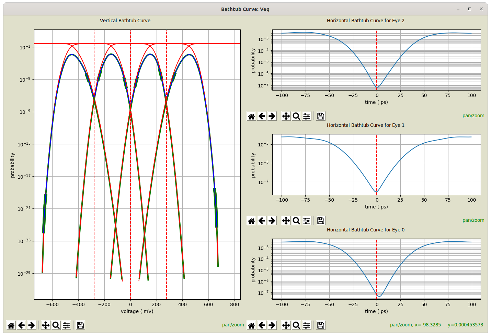

Bathtub Curves Dialog¶

Eye diagram measurements are configured in the Eye Diagram Properties Dialog when configuring an Eye Probe in a schematic. See Eye Diagram Measurement Properties.
After eye diagram creation, following the start of Simulation, the Eye Diagram Dialog is opened.
The Bathtub Curve Dialog is available by selecting Bathtub Curve from the Eye Diagram Dialog.
If Bathtub Curve is not available in the dialog, then either the Measure Bathtub Curves property is set to False, or the measurements could not be made.
The dialog is broken into a left and right half:
-
Vertical Bathtub Curve – on the left. This shows:
-
a histogram, in blue, of the vertical slice of the eye diagram. These probabilities are directly measured.
-
fitted tails of the histogram, in fat green lines, showing the region of the histogram used to perform each tail fit. The location of these areas is governed by the Decades Above for Fit and the Minimum Points for Fit. See Bathtub Curve Measurement Properties.
-
histograms for each symbol transmitted, in green, resulting from fitted and actual data.
-
cumulative distribution functions (CDFs), in red, representing probabilities for how the given symbols are interpreted.
-
decision levels, in red, vertical, dashed lines, indicating where decisions are made.
-
Horizontal Bathtub Curves – on the right. This shows, for each eye, the probabilities for a horizontal slice taken through the histogram at the decision point (governed by the Decision Level), along with a vertical, dashed, red line showing the middle of the eye.